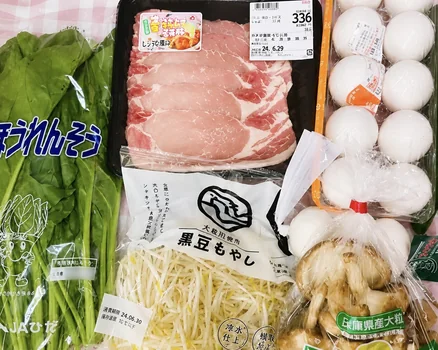
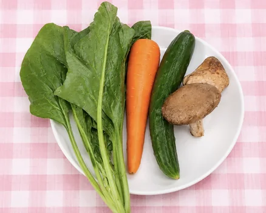
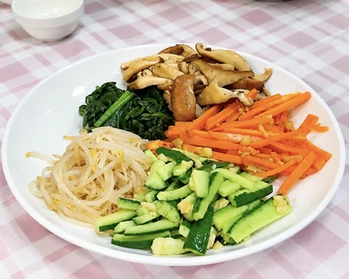
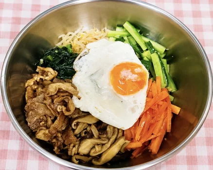

テンポの良い編集
テンポの良いカットと
テロップで、最後まで
楽しめる動画にしました。
VIDEO CONTENT
おうちで簡単に作れるビビンバのレシピ動画。
買い物から調理まで、
料理の流れを分かりやすく紹介しました。
韓国料理が好きな若者や、料理を楽しみたい人をターゲットに、
自宅で簡単に作れるビビンバのレシピ動画を制作しました。
材料の買い物から調理まで、初めてでも分かりやすい構成を意識しました。

必要な材料を
分かりやすく紹介します。

野菜や具材を
準備します

ソース作りから具材の
調理までを紹介します

彩りよく盛り付けて
完成です！
テンポの良いカットと
テロップで、最後まで
楽しめる動画にしました。
色や文字を工夫し、
親しみやすい雰囲気に
仕上げました。
BGMや色調補正で、
料理の美味しさを
表現しました。
韓国料理が好きな若者
料理が好きな人
自宅で簡単に料理を楽しみたい人
動画では、情報を分かりやすく
伝えるためのテンポや画面構成が
重要だと学びました。